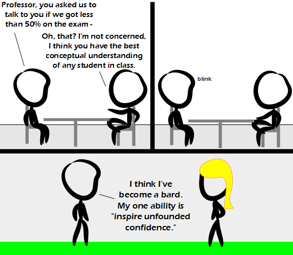

Comic JK 803
When I Feel Like It
⇤
<
?
>
⇥

⇤
<
?
>
⇥
Forum
.
RSS
.
Digg
.
Facebook
.
Reddit
.
Twitter
.
Stumbleupon
Enter your thoughts on number 803 here. Please, no spamming, trolling, or treecoing. What is that yellow glob of goop stuck to his head?????? Everyone looks smart when compared to your mother. My Life... In a nutshell. huh? For some reasons I don't understand my friends think that I am really smart >You probably are. You just don't realize it because being smart often doesn't feel like being smart. Go read Yahoo Answers for a while. >>+1 >>Haha! Yes! >I think smart people just tend to end up around other smart people, so they themselves don't seem so smart in comparison. That or, like me, they just have unreasonably high standards for themselves. >>This. Also, for a very long time, being smart only got me grief, so I got very good at acting 'normal.' Still haven't gone to a comp 116 lecture, have a 100 in the class. It works. >I have the same problems! I'm not only really, but also exceptionally smart, so I don't understand why they think I'm only really smart. I even show them how smart I am by telling them all the things I've accomplished. They only roll their eyes and go away then. Why is that? >>*rolls eyes and goes away* >>>"smart" people often don't think themselves "smart" - they are perceptive enough to realise that however much they know, it is negligible compared to what they don't know... "not-smart" people think they know everything, and insist on offering their opinion on subjects they know nothing about... These aren't the grades you're looking for... Never experienced anything like this > I did. My professor told me not to worry about the grade. Got A anyway.